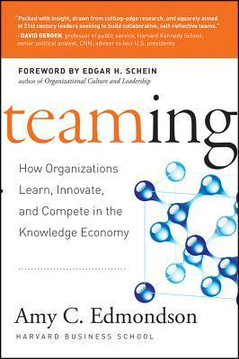
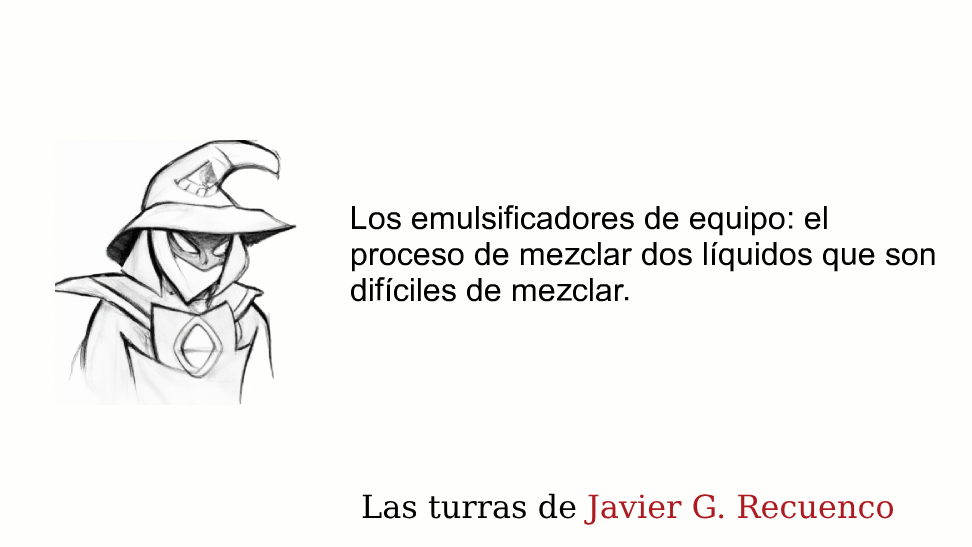
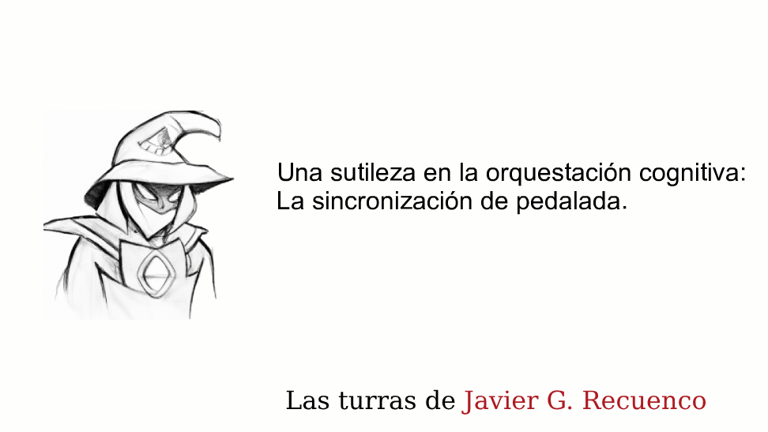
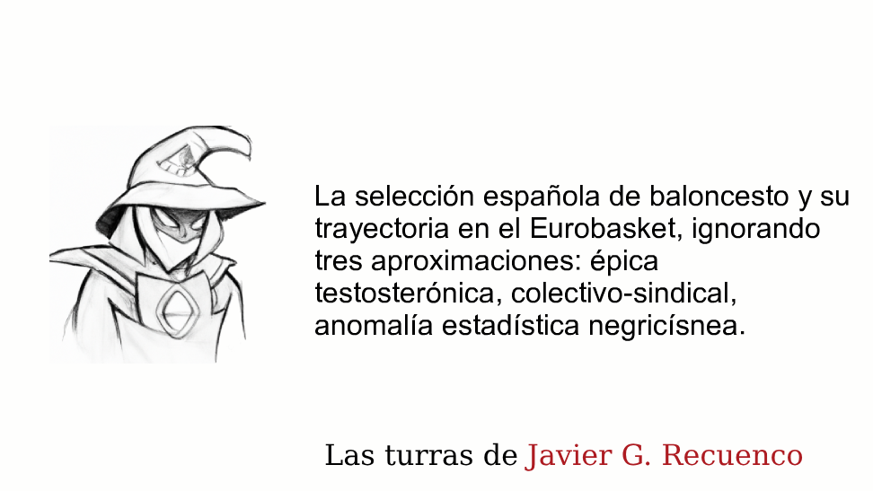
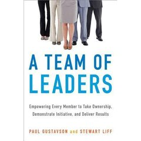
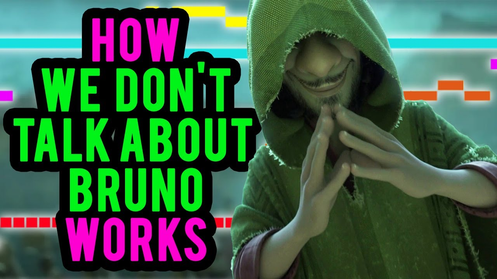

Módulo 06 / Apartado 3 de 5
Emulsificadores y pedalada
La persona que hace que la mayonesa no se corte, y a la que despiden por no aportar nada. Con Depeche Mode, Makélélé, el síndrome del pato de Stanford y la condición sin la cual ninguna de estas cosas ocurre.
La metáfora, que es química de verdad
Emulsionar es mezclar dos líquidos que no se mezclan. Aceite y agua, por ejemplo. Puedes agitarlos con toda tu alma durante media hora: en cuanto paras, el aceite vuelve a la superficie. La energía no basta.
Lo que hace falta es un emulsionante —un tensoactivo—, y su gracia está en la forma de la molécula: tiene una parte que se lleva bien con el agua y otra que se lleva bien con la grasa. Se coloca en la frontera entre las dos, sujeta las gotitas y evita que se junten otra vez. Es lo que hace que existan la mayonesa, la leche y media farmacia.
Qué no es un emulsificador
Recuenco marca dos distinciones que evitan confundirlo con cosas parecidas:
- No es un mediador
- La mediación busca acuerdos entre partes enfadadas y tiende puentes donde la comunicación está rota. Es útil, y se limita a conectar. El emulsificador expande: hace que el equipo rinda por encima de su capacidad teórica.
- No es el freno de un acelerador
- No es la pareja racional del emocional, ni el prudente que compensa al impulsivo. Es otra cosa: una consolidación, un cambio de estado. Un pil pil, dice él. La mezcla acaba siendo una sustancia distinta de las originales.
- Y es el anti-Apolo
- Si el equipo Apolo del apartado anterior es un grupo de excelentes que rinde por debajo de su suma, el emulsificador es lo contrario exacto: hace que un grupo limitado supere su umbral teórico.
Un emulsionador es una persona con el ego bajo control y que es capaz de sacrificar su brillo personal por el objetivo colectivo. No es que no tenga ego, es que entiende su labor y no le importa llevarla a cabo.
Tres ejemplos, y ninguno es de empresa
El caso que abre la turra —escrita pocos días después de su muerte, en mayo de 2022— y el más claro que hay. Fletcher no tenía un talento musical especial. Entró en el grupo por su amistad con Martin Gore y durante años llevó las cuentas y la logística. En directo tocaba las partes de teclado más básicas.
El teclista que llegó después, Alan Wilder, sí era un músico extraordinario, y le reprochó durante años que no aportaba nada. Llegaron a las manos antes de un concierto. Wilder acabó marchándose en 1995 y el grupo entró en su peor crisis: con Gore con problemas y el cantante hundido en la heroína, disolverse era una opción real.
Y no se disolvieron. Lo que quedaba en pie era Fletcher. Como resume la turra: Gore era un músico con problemas y Gahan un cantante con muchos más problemas, pero con Fletcher eran un grupo. Después fue el portavoz oficial de la banda durante décadas.
El segundo es Al Horford, pívot dominicano de los Boston Celtics. Nadie esperaba nada de él después de dos etapas malas en Filadelfia y Oklahoma City. Recuenco apunta un matiz que se olvida siempre: en una de ellas encajaba bien, pero el equipo estaba perdiendo a propósito para mejorar su posición en el draft, así que no interesaba tenerlo en pista. El contexto también cuenta a la hora de juzgar a alguien.
Su descripción de Horford es la definición del oficio: alguien que se siente engranaje, responsable con su papel y con su forma física, que no sale en los resúmenes de la semana pero hace el trabajo sucio y mete sus tiros cuando toca. Y que abre espacio para que los dos nombres grandes del equipo brillen más.
Y el tercero lo suelta de pasada, para quien lo pille: un Makélélé. El centrocampista al que el Real Madrid vendió al Chelsea en 2003 en plena era de los galácticos. La frase que se le atribuye a Zidane sobre aquella operación lo resume mejor que cualquier análisis: ¿para qué añadir otra capa de pintura dorada al Bentley si estás perdiendo el motor entero?
Acompasar la pedalada
El concepto hermano, y viene de otra turra. Cuidado con el nombre, porque induce a error: no significa que todos hagan lo mismo a la vez.
El síndrome del pato
Un concepto que Recuenco llama «de los más fascinantes que he oído nunca», y que hace falta explicar porque casi nadie lo conoce fuera de las universidades donde se acuñó.
Un pato en un estanque parece deslizarse plácidamente por la superficie. Debajo del agua, está pataleando como un loco para no hundirse.
El nombre se acuñó en Stanford para describir a estudiantes brillantísimos que mantienen una apariencia de facilidad absoluta mientras por debajo están al límite. Y como todos los demás también aparentan facilidad, cada uno concluye que el único que está sufriendo es él.
El resultado es que gente ultracompetente se siente incompetente, cosa que desde fuera resulta incomprensible. Es lo mismo que hace que sorprenda que alguien aparentemente triunfador se hunda: no sabíamos nada, porque solo veíamos la superficie.
Y de ahí sale una de las cosas más honestas que dice sobre su propio programa: que a los alumnos les deja claro que sentirse incompetente es fundamental. No es una crueldad, es la condición de partida cuando el problema es de verdad nuevo.
Su otra referencia para lo mismo, y funciona: Encanto, la película de Disney. Mirabel es la única de la familia que no tiene un don y es la que conduce al grupo de gente con dones. Y la abuela, dice, es la metáfora perfecta de la persona que no quiere cambiar: la directora general aferrada al pasado y al qué dirán, que no tolera disidencia y lleva la casa a la ruina sin querer.
La condición sin la cual nada de esto pasa
Falta una pieza. Todo lo anterior —emulsificar, acompasar, reconocer al secundario— supone que la gente dice en voz alta lo que ve. Y eso no es gratis ni es normal: tiene un nombre técnico, una investigadora que lo midió y una prueba grande.

El libro de esto Teaming: How Organizations Learn, Innovate, and Compete in the Knowledge EconomyEdmondson es quien acuñó seguridad psicológica: la creencia compartida de que el equipo es un sitio seguro para asumir riesgos interpersonales — preguntar, discrepar, admitir un error. Y llegó a ella por accidente: estudiando equipos de hospital, encontró que los equipos mejor valorados reportaban más errores. No cometían más: los contaban. Su otro concepto, el teaming, es exactamente el equipo CPS — gente que se junta para un problema, trabaja sin haber trabajado antes junta y se disuelve — Amy C. Edmondson · 2012
Y la prueba grande. Entre 2012 y 2015 Google estudió cientos de sus propios equipos para averiguar qué hacía que unos rindieran más que otros. Le llamaron Proyecto Aristóteles. Buscaban composición: perfiles, seniority, amistades, formación. No encontraron nada ahí. Lo que apareció, con diferencia sobre todo lo demás, fue la seguridad psicológica. Quién estaba en el equipo importaba mucho menos que cómo se trataban entre ellos.
Con lo que se cierra el círculo del módulo 4: la norma de interacción respetuosa era la cuarta fuente de resiliencia de Weick en Mann Gulch, y es la única de las cuatro que se puede instalar antes de que pase nada. Aquí tiene nombre, medición y bibliografía.
El resumen
Es el que sujeta las fronteras. Pista: si al pensar «¿quién sobra aquí?» te sale su nombre, es él.
Porque su aportación es invisible por construcción, y porque cuando se vaya el daño no va a parecer relacionado con su marcha. La mayonesa nunca se corta el mismo día.
Que cada uno mantenga su cadencia. Lo que se sincroniza es el ritmo común, no el gesto de cada uno.
Manera rápida de saberlo: recuerda la última vez que alguien contradijo en público a quien manda, y qué le pasó después. Si no te acuerdas de ninguna, ya tienes la respuesta.
Fuentes de este apartado
Las turras de las que sale

Los emulsificadores de equipoTurra · 46 tweets · may 2022El concepto propio más redondo del corpus. Arranca con la química de las emulsiones explicada en serio, define la figura, la distingue del mediador, y la ilustra con Andrew Fletcher de Depeche Mode —escrita a los pocos días de su muerte— y con Al Horford en los Celtics. Cierra con el emulsificador como anti-Apolo: el que permite que un grupo limitado supere su techo teórico.

Una sutileza en la orquestación cognitiva: la sincronización de pedaladaTurra · 43 tweets · feb 2022La de acompasar la pedalada. Aclara que no tiene nada que ver con moverse todos igual, mete el síndrome del pato de Stanford, usa Encanto como metáfora del orquestador de talentos extremos, y explica qué evalúa él de verdad en los trabajos de grupo del programa: la capacidad de ser funcional cuando el resto deja de serlo.

La selección española de baloncesto en el EurobasketTurra · 43 tweets · sep 2022El caso deportivo del mismo asunto, escrito en caliente: una selección a la que nadie daba nada, sin las estrellas de la generación anterior, ganando un campeonato por encajar mejor que nadie. Es la demostración empírica de que la suma de talento no predice el resultado, que es la tesis de los dos apartados anteriores.
Los libros
Seguridad psicológica y equipos que se forman para un problema y se disuelven. Es la condición previa de todo lo demás: sin ella, la diversidad cognitiva del módulo 4 no aporta nada porque nadie dice lo que ve. El origen del concepto —los equipos buenos reportaban más errores— es de sus mejores páginas.
 The Five Dysfunctions of a TeamPatrick Lencioni · 2002
The Five Dysfunctions of a TeamPatrick Lencioni · 2002La pirámide de las cinco disfunciones, en formato novela. Es ligero y funciona como diagnóstico rápido: si en tu equipo no hay conflicto abierto, no es que os llevéis bien, es que falta la base. Se lee en dos tardes.

A Team of LeadersPaul Gustavson y Stewart Liff · 2014Enlazado en el corpus desde la turra de Pirlo y Gattuso. Va de diseñar equipos donde el liderazgo esté repartido en lugar de concentrado, que es la traducción organizativa de la deferencia a la experiencia del módulo 4 y de lo que McChrystal describe en Team of Teams.
Para ver
El vídeo que la turra usa para explicar lo que no es acompasar la pedalada: el ejercicio del esquí gigante de los cursillos corporativos, donde la sincronía se consigue anulando la individualidad. Divertido de ver y exactamente el error conceptual que el apartado corrige.

Por qué funciona «No se habla de Bruno»Howard Ho · análisis musicalEl análisis de la canción de Encanto, que es la película que Recuenco usa como metáfora del orquestador. Aquí importa por la estructura: cinco voces con métrica, tono y agenda distintos que se superponen sin pisarse y acaban sonando a una sola cosa. Es literalmente acompasar la pedalada, en tres minutos.